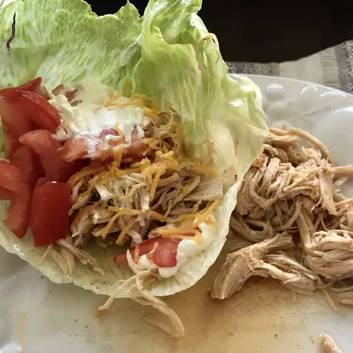

Shredded Chicken Tacos
This chicken tacos recipe is easy to make in a slow cooker. Spoon the filling into warm tortillas for a very tasty meal.

Ingredients
- 1 cup chicken broth
- 3 tablespoons taco seasoning mix
- 1 pund skinless, boneless chicken breast